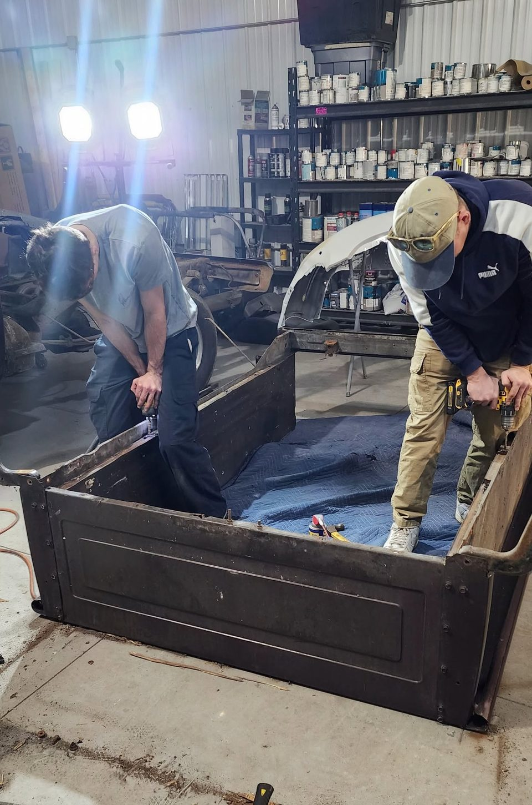
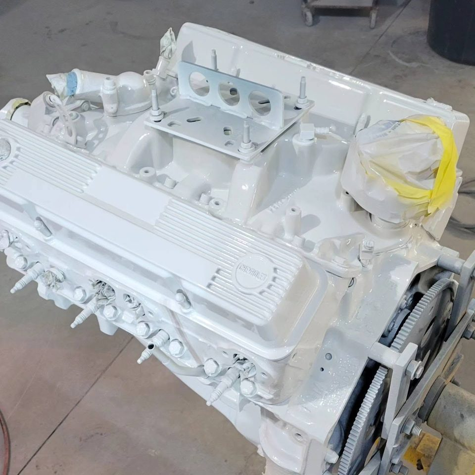
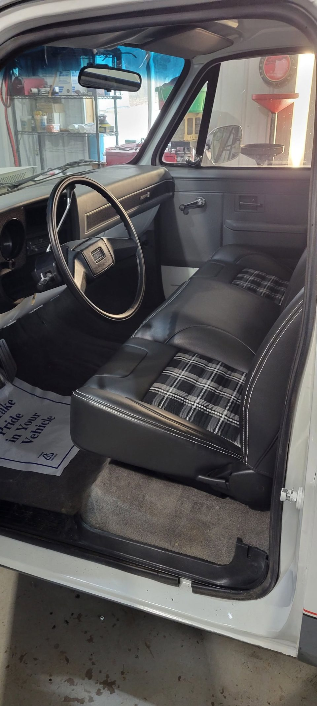
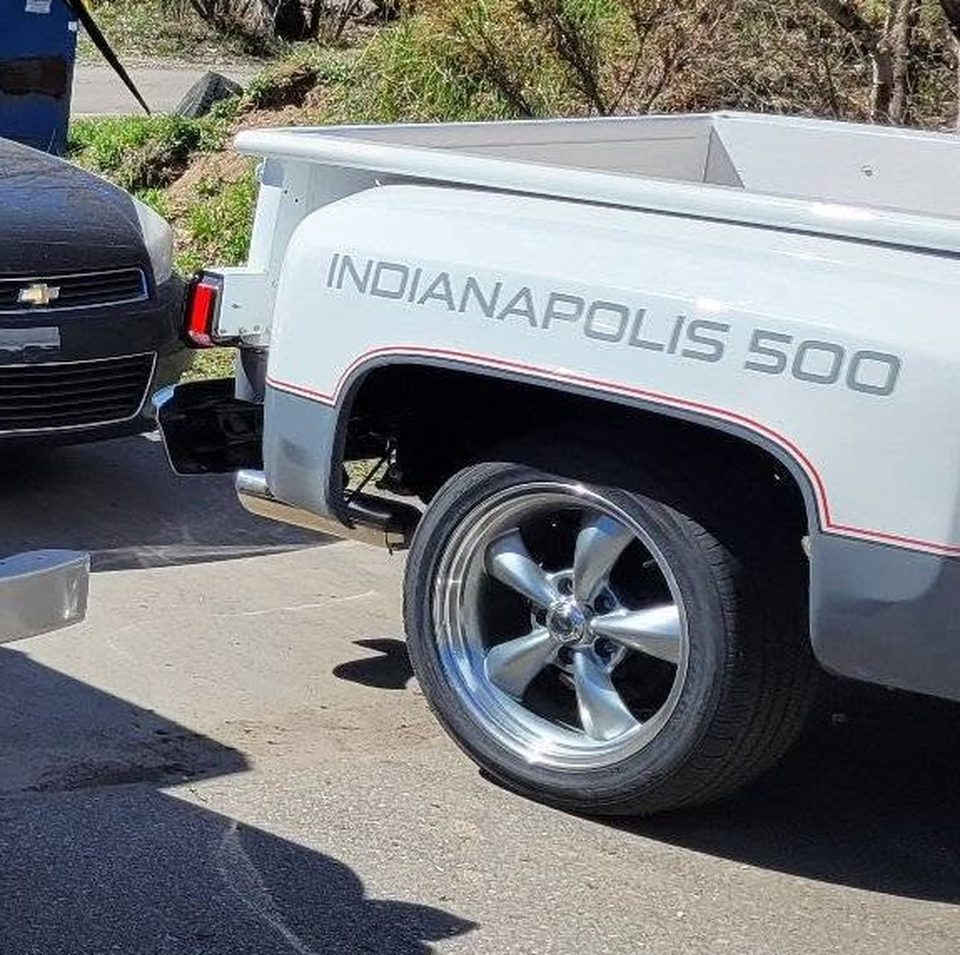

Indy 500 Truck
Chevrolet C10 Stepside · Frame-Off Restoration

The Story
Work Truck In. Pace Truck Out.
It arrived the way most square-bodies do — maroon, tired, and hauling whatever needed hauling. Sound bones under a lot of hard winters, and an owner who could see what was underneath.
We took it all the way down. The bed came off, the cab came down to bare metal, and every panel was worked back to straight before a drop of colour went near it. The engine came out, went across the bench, and went back in rebuilt and repainted.
It came back together in white over silver with a red pinstripe down the length of it, Torq Thrust-style wheels under the arches, and a plaid interior that suits it exactly. The Indianapolis 500 lettering on the bedside is the finishing touch — a tribute to the pace trucks that led the field at the Brickyard.
Build Sheet
The Specs
- ✓Frame-Off TeardownBed off, cab stripped, every panel worked back to straight metal.
- ✓Engine Rebuilt & RefinishedPulled, gone through on the bench, and detailed before it went back in.
- ✓White Over Silver, Red PinstripeTwo-tone laid down in-house and cut to a show finish.
- ✓Indianapolis 500 Tribute LiveryBedside lettering in the spirit of the Brickyard pace trucks.
- ✓Torq Thrust-Style WheelsClassic five-spoke rolling stock to match the era.
- ✓Plaid InteriorPeriod-correct cabin trimmed to match the outside.
- ✓Photo-Documented BuildEvery stage captured, teardown through delivery.
The Transformation
Before & After

Same truck, same angle. Drag the red handle to sweep between the day it arrived and the day it left.
The Journey
Build Gallery







